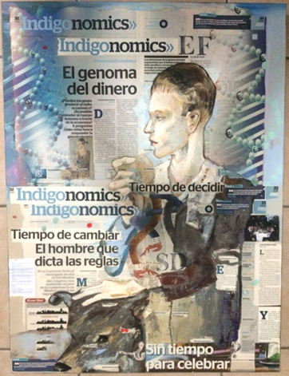

Hi there!

One of my most priced possessions is the painting you see to your left.
The first reason for this is that I really enjoy art. Since I was young, I took it upon myself to learn as much as I could about it, believing it made me appreciate other ways of thinking. In college I pursued this interest further and took a Mexican Art History Certificate at the Museum of Contemporary Art in Monterrey. I was delighted to learn that art can be about much more than paints and colors. In fact, it was very much like going to a history class, my favorite subject growing up.
Up until I received this artwork as a present, I had only had contact with art through classes or museums. I enjoyed having a piece in my room much more.
However, the second reason I value this artwork is about what it represents. The painting is an original artwork by Salvador Diaz, an up and coming artist in Mexico, and every piece of newspaper is a cut-out of an article published by me over the course of about four months before I left my part-time job during college.
The painting was commissioned for me by the editor of my section, who came to value my contribution to the team for being what they affectionately termed “intense”. At the time, living the transition from a website into printed media entailed important operational challenges, the company more than doubled in size, no one knew each other and, to top it off, three of the team-members were still juggling school. Within a few weeks the team became overwhelmed because we lacked organization, a creative place like Reporte Indigo is not necessarily the most prone for rules.
I talked with my team about the constraints and what I intended to do to “grease the wheels”. We all agreed that a bad cop was necessary, and I would take the lead. So during the next couple of weeks, I distributed the duties, including the editor’s, in tight schedules and automated emails to remind everyone what they had to do. In any given day, one of the members would be writing a short piece, another would be researching or obtaining data and another would be working on a longer piece. This also gave certainty to the editor, who grew accustomed to signing off articles at the same time every day - a huge improvement from the free-wheeling days before. After some tough love, the team developed the habit of working on tasks in an orderly way and we began to publish better articles and had more time to brainstorm.
Apart from enjoying the aesthetic, and cherishing the art in my room, the painting to me represents a very thoughtful way of saying “job well done” by my editor, and reminds of a very challenging but rewarding time in my early career.
-Eduardo Flores